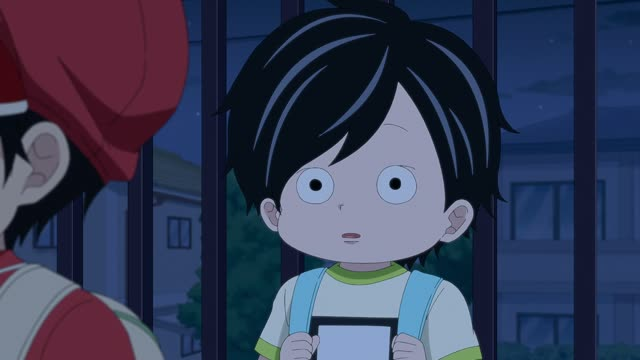

と

YouTube · video
ヨーロッパと南米に行きました
"[I] went to Europe and South America."
と joins two nouns into one group: "A and B". It goes between them: ヨーロッパ + と + 南米.
The particle that follows (here に) belongs to the whole pair. On this card, it answers "Went where?": Europe and South America, both of them, that's the full list.
と only joins nouns, never verbs or whole sentences. It's the same in polite and casual speech.

Shirokuma Cafe · Episode 35
白と黒だよ。
"White and black."
と joins two nouns. On this card, 白 ("white") + と + 黒 ("black"), with casual だよ at the end.
Quick Examples
At the konbini counter, ordering.
おにぎりとお茶をください。
"An onigiri and a tea, please."
PoliteA friend asks what's in your camera bag.
カメラとレンズ二本。
"A camera and two lenses."
CasualTelling someone who lives with you.
妻と猫がいます。
"There's my wife and the cat."
The pair takes one が, after the second noun.
PoliteWith and without
コーヒーをください。
Just one thing: a coffee.
コーヒーとケーキをください。
Two things in one order. を comes once, at the end of the pair.
Examples from Media

YouTube · video
あのビンディングとブーツを買いました。
"I bought those bindings and boots."
Bought what? Both things, so one を after the pair.

YouTube · video
冬服と夏服両方持ってきました
"I brought both winter and summer clothes."
両方 (both) right after the pair makes it extra clear.

Quartet · Episode 2
私と別府さんだけの秘密です
"It's a secret just between me and Beppu."
私 + と + 別府さん: "me and Beppu".

Pokémon: Indigo League · Episode 1
ピカチュウとオレは友達だい..な？
"Pikachu and I are friends, right?"
Works for people too: Pikachu and me, then は for the whole pair.

Shirokuma Cafe · Season 1, Episode 3
アイドルと学業の両立がね。
"Juggling being an idol and school, huh."
両立 is doing two things at once, so と lists the two things.

YouTube · video
道の脇に車とテントが
"By the side of the road, a car and a tent."
The verb (ある) is just left off. You still get the picture.

PiroPito · First Playthrough of Minecraft #05
ゲームのストーリーと核心。
"The game's story and its core."
Just a list, no verb. と is happy without one.

Kotaro Lives Alone · Episode 4
ママとパパは？
"What about your mom and dad?"
Further Reading
A Dictionary of Basic Japanese Grammar
Entry "to¹" (and) · pp. 473–476
Tae Kim's Guide to Japanese Grammar
Noun-related Particles · The inclusive 「と」 particle